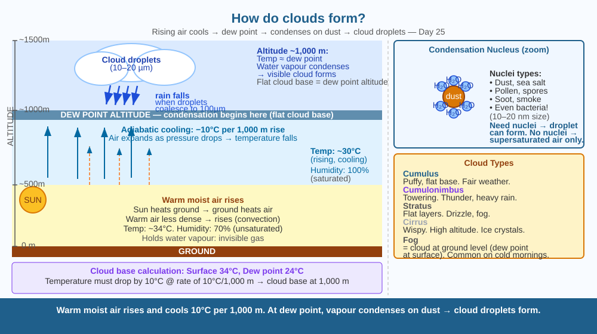

Discover why water vapour — an invisible gas — suddenly becomes a visible cloud at exactly the right altitude, and what tiny invisible particle makes every cloud droplet possible.
On a clear morning you can see for miles. By afternoon, white fluffy clouds appear out of nowhere — not blown in from somewhere else, but formed right above you. The next day, the same sky produces grey rain clouds. What makes water vapour suddenly become visible at a specific height — and why does it sometimes rain and sometimes just float as cloud?
Cloud formation involves three essential ingredients:
1. Water vapour. Water evaporates from oceans, lakes, rivers, soil, and vegetation into the air as invisible water vapour. Warm air can hold much more water vapour than cold air.
2. Rising and cooling air. Warm air is less dense and rises (convection). As it rises, the atmospheric pressure drops. Lower pressure allows the air to expand — and expanding gas cools. This is called adiabatic cooling — temperature drops about 10°C per 1,000 m of ascent with no heat exchange. Eventually the rising air reaches the dew point — the temperature at which it is holding as much water vapour as it can (100% relative humidity). Any cooler, and water vapour must condense.
3. Condensation nuclei. Water vapour doesn't spontaneously form liquid droplets in pure air — it needs a tiny solid particle to condense around. These particles — called condensation nuclei — are dust, sea salt, smoke, pollen, fungal spores, and even bacteria. The water vapour sticks to these nuclei and forms tiny liquid droplets typically 10–20 µm in diameter (10–20 times smaller than a human hair). Millions of these droplets floating together form a cloud.
The cloud base is the altitude where the rising air cools to its dew point. All cumulus clouds have a flat bottom at exactly this altitude — a visible "ceiling" above which condensation is occurring.
Rain: Cloud droplets are too small to fall — air resistance keeps them floating. But droplets collide and merge (coalescence) until they're large enough (about 100 µm) that gravity exceeds air resistance — and rain falls.
Imagine a glass of lemonade with ice. The outside of the glass becomes wet with water droplets — the cold glass has cooled the nearby air below its dew point, and water vapour in the room has condensed on the glass. The glass is the condensation nucleus. Now scale this up: rising warm air is the air next to the cold glass, the high altitude is the cold glass itself, and every tiny dust particle is a miniature glass surface for water vapour to condense upon.

The diagram shows a vertical cross-section from the ground to cloud height. At ground level: warm air with water vapour arrows rising. At the dew point altitude: a sharp flat line (cloud base) with small water droplets forming around dust particles. Above: the cloud body with densely packed droplets. A zoom-in shows a single condensation nucleus (dust particle) surrounded by water molecules condensing into a cloud droplet. A comparison panel shows supersaturated air without dust — no cloud forms.
Breathe on a cold metal surface (spoon from the freezer, or a bathroom mirror). Water vapour in your warm breath hits the cold surface, cools below the dew point, and condenses into tiny droplets — you see fog on the surface. This is cloud formation in miniature. Now breathe on the same surface without the cold (hold the mirror at room temperature) — much less condensation. Temperature difference is the key.
A cloud can contain millions of tonnes of water — yet it floats. A single cloud droplet has a terminal velocity of about 1 cm/s downward, but updrafts inside clouds easily exceed this at 1–10 m/s. So droplets are continuously being lofted back up even as gravity pulls them down. When updrafts weaken (storm passing, evening cooling), droplets start to settle and merge. Why do cumulonimbus clouds produce heavy downpours while stratus clouds produce only drizzle — even though stratus may contain similar amounts of water?
What is the mechanism by which clouds form in the atmosphere?
Why is understanding condensation and cloud formation more useful than knowing that clouds are made of water?
If there were no dust particles in the atmosphere at all, what would you predict about cloud formation?
A weather forecaster says: "Today's dew point is 24°C and the surface temperature is 34°C. Expect cumulus clouds to form by noon." Using the rule that adiabatic lapse rate is approximately 10°C per 1,000 m, calculate at what altitude the cumulus cloud base would form. (Hint: at what altitude does the air cool from 34°C to 24°C?) Show your calculation.
Some bacteria — including Pseudomonas syringae — produce a protein on their outer surface that is an extraordinarily good ice-nucleating agent. These bacteria float in the atmosphere and trigger ice crystal formation in clouds at much warmer temperatures than dust would. Scientists have found living bacteria in snow and rain that fell from clouds thousands of metres above. It is possible that some rainfall is partly triggered by living organisms. One researcher called this "bioprecipitation" — life making its own rain.
Clouds form when rising warm air cools to the dew point and water vapour condenses around dust or pollen particles. Cloud base = altitude where cooling equals dew point. No condensation nuclei → no cloud droplets → no rain.